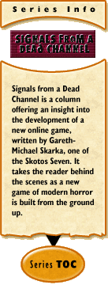

The Real Millennium
by Gareth-Michael Skarka
January 2, 2001
Welcome Back.
I know, I know... last column I said "see ya in 7." Should've been more like "See ya in 21". I sort of forgot about the holiday vacation I had scheduled in there.
Anyway, I hope that all of you had Happy Holidays... a Merry Kwanzannukahmas or whatever it is you observe.
One thing that we all observe is the New Year. Here we are: 2001. The 21st century. The 3rd Millennium... for real this time. I know we all got our collective panties in a bunch about 2000. Hell, even I was caught up in it, screaming my lungs out in Times Square with a million of my closest friends. But, deep down, we all knew that it was nothing more than the thrill of the odometer rollover. This year was the real deal.
On New Years Eve this time around, it was a quieter and more sedate affair at Casa del Skarka. Not the least of which because my 11 year old daughter is now living with me (which, of course, necessitated the observance of the new "watch MTV's New Years celebration on TV" tradition). One thing that struck me, however, is that 2001 will be the year where this game, Arcana, will finally be open for play (at the very least in stage form).
Pretty cool.
Of course, it's also more than a little bit daunting, when I think about how much work I still have ahead of me. But, even with the coding and everything else still spread before me like a vast, uncharted sea (wow, heady metaphor), I remain exhilarated by this process, and its potential.
So... for those of you who came in late: We've got the Arcana — a group of immortal werewolves who organize along the symbolism of the Tarot deck, protecting our world from incursions by the demonic forces of Hell. They have kept the wolf from the door, so to speak, for centuries.
With that centuries-long battle comes a problem. As the years have passed, more and more of the Arcana have fallen to the forces of evil. As these members are killed, the ranks of the Arcana grow more and more thin. This has given rise to the greatest controversy to plague the Arcana during its long history: should new members be purposefully created?
The curse of lycanthropy is passed when a were attacks, but does not kill, a victim. The victim is doomed to become a werewolf at the next full moon. (Remember, this is not the super-hero in fur version of the legend, but the cursed variety). The question that rages through the Arcana membership is this: is it not an evil act to curse an innocent with lycanthropy on purpose? Some of the membership feel that time is growing critical, and new werewolves must be created immediately. The leaders of the Arcana, however, have long held the policy that creating new members purposefully is an evil thing — perhaps even a temptation placed in the Arcana's path by the forces of Hell.
So, for now, the numbers of the wolves are dwindling, but they continue the struggle. Eventually, however, even the leadership acknowledges that this question will make itself an unavoidable issue.
There's a cheery thought, yeah?
What's more — that's it for this week. See ya in 7, and I mean it this time.